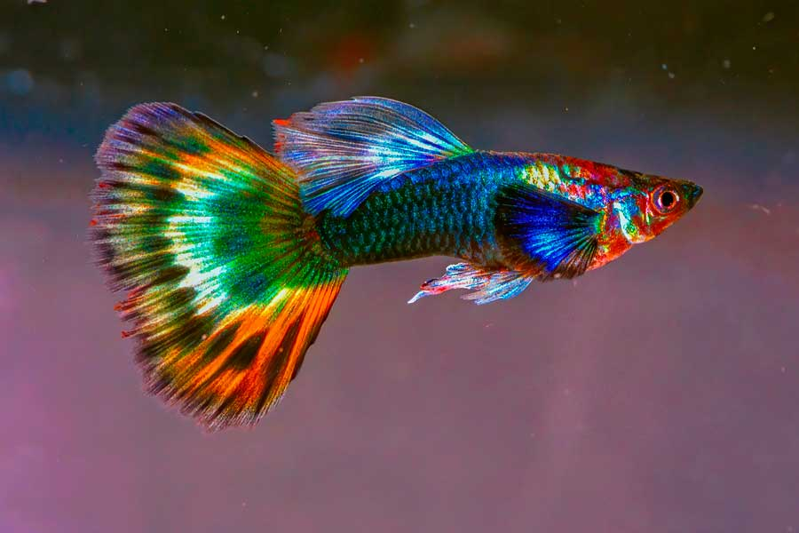

El pez guppy es un pez pequeño de agua dulce muy popular en acuarios. Su nombre científico es Poecilia reticulata. Es conocido por sus colores brillantes y su facilidad para reproducirse.
El guppy vive en ríos y aguas tranquilas de América del Sur. También es muy común en acuarios domésticos.
Se alimenta de larvas, pequeños insectos, algas y comida especial para peces.